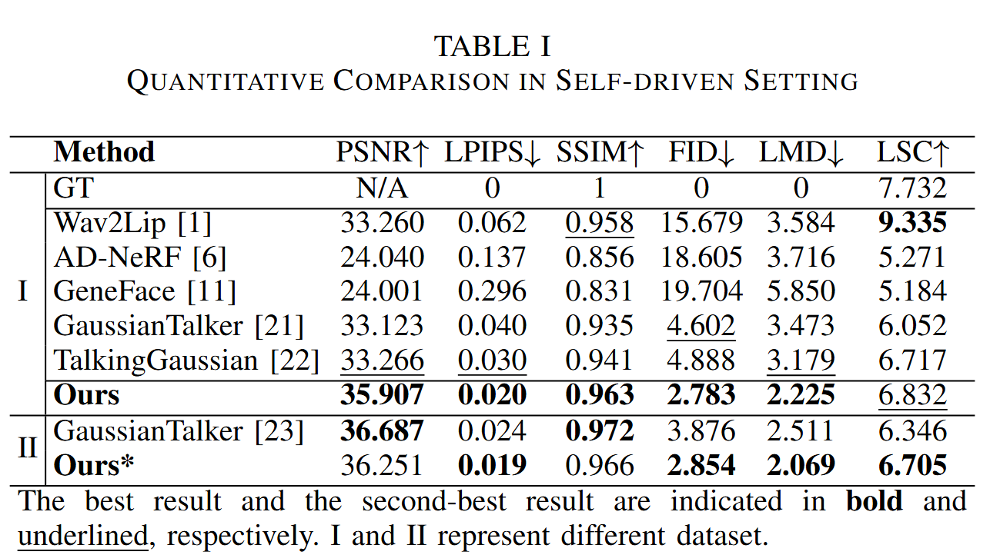

Quantitative Comparison


3D Gaussian splatting has demonstrated significant potential in audio-driven talking head synthesis. However, despite notable advancements in speed and fidelity, current methods still face challenges such as inaccurate lip movements and the presence of artifacts. To address these issues, we introduce LMTalker, a sparse landmark-guided 3D Gaussian splatting method for audio-driven talking head synthesis. Our approach explicitly utilizes sparse 3D facial landmarks to control the deformation of dense Gaussians, thereby reducing inconsistencies between audio and facial speaking dynamics. Additionally, we recognize that inner mouth movements, such as tongue motions, cannot be fully controlled by landmarks alone, as they often exhibit independence from lip shape changes. To overcome this limitation, we propose a hierarchical generative structure that decomposes speaking dynamics into head and inner mouth regions. Experimental results demonstrate that our method surpasses existing approaches in terms of fidelity and lip movement accuracy, while retaining high rendering efficiency.
Overview of our proposed framework. We begin with the canonical Gaussian $\mathcal{G}_c$ through a smooth-and-merge initialization. During training, we utilize landmarks as guidance to jointly learn the deformations of the head and inner mouth Gaussians through two deformation modules. The $\Delta\mu$ is calculated as a weighted sum of displacements from its nearest $K$ landmarks. The deformed Gaussians are rendered and stitched together to produce the final result $I'_{full}$. During inference, a pre-trained audio-to-motion model PitchVAE generates landmark sequences to drive the Gaussian deformations.